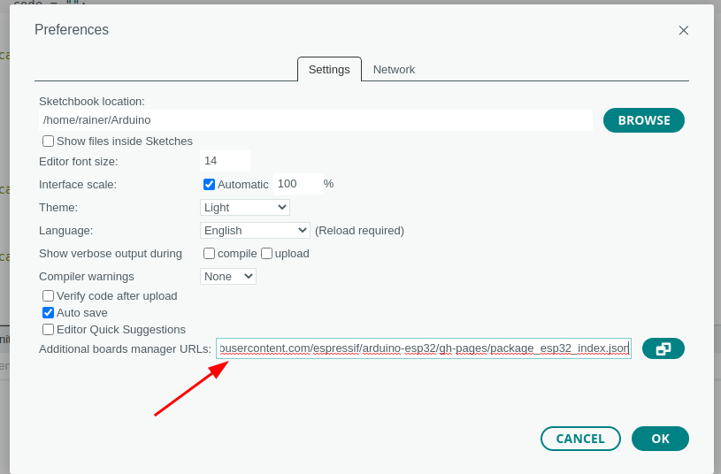
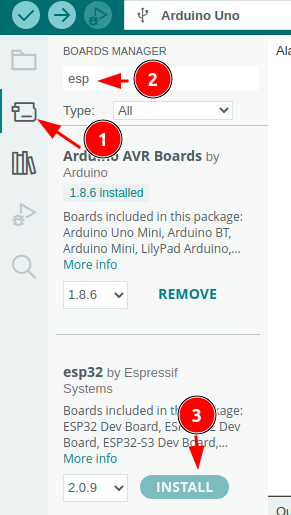
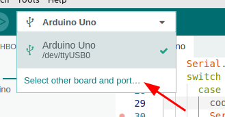
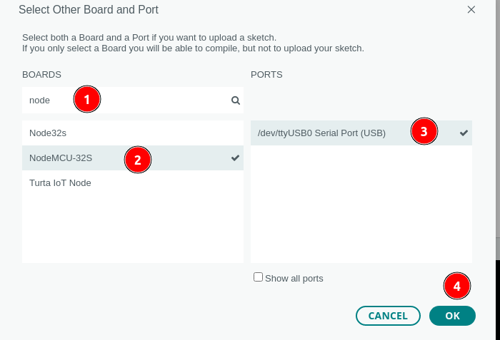

ESP32 mit Arduino IDE programmieren
1. Arduino IDE auf ESP32 einstellen
Die Linux-Systeme in der Schule sind bereits für die Programmierung von ESP32-Chips vorbereitet.
Wenn du deinen eigenen Rechner vorbereiten willst, kannst du nach folgender Anleitung vorgehen:
- Öffne das Voreinstellungsmenü über File.Preferences
- Kopiere folgende Adresse in das Feld Additional Board...:
https://raw.githubusercontent.com/espressif/arduino-esp32/gh-pages/package_esp32_index.json
- Klicke auf OK

-
Öffne den Board-Manager:
-
Trage in das Suchfeld esp ein.
-
Installiere esp32 by Espressif

Anleitung Script-Example.com
2. ESP32 anschließen
Schließe den ESP32 mit dem Micro-USB-Kabel an einer der beiden Buchsen auf der rechten Seite des Rechners an.
3. Einstellen des ESP32 in der Software
Klicke auf die Pfeilspitze rechts von Select Board und wähle Select other board and port:

- Trage im Feld BOARDS Node ein.
- Klicke auf NodeMCU32S
- Wähle bei PORTS /dev/tty/USB0 Serial Port (USB)
- Klicke auf OK

zurück